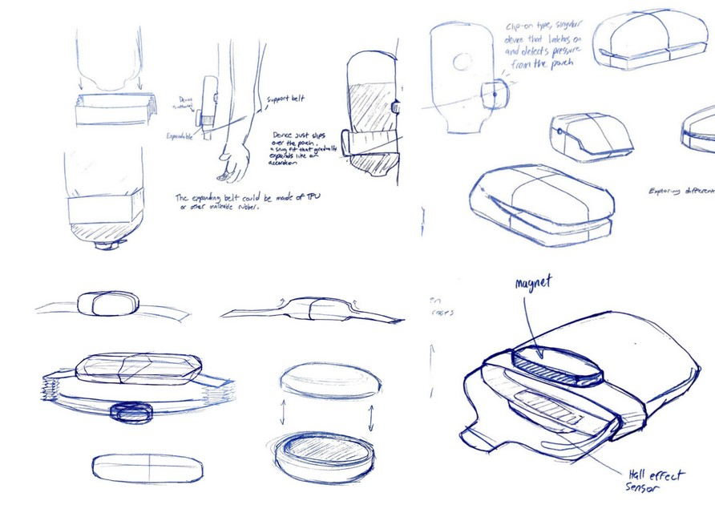
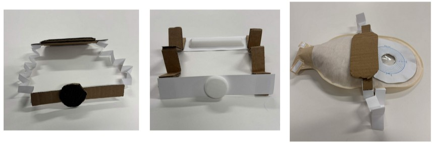
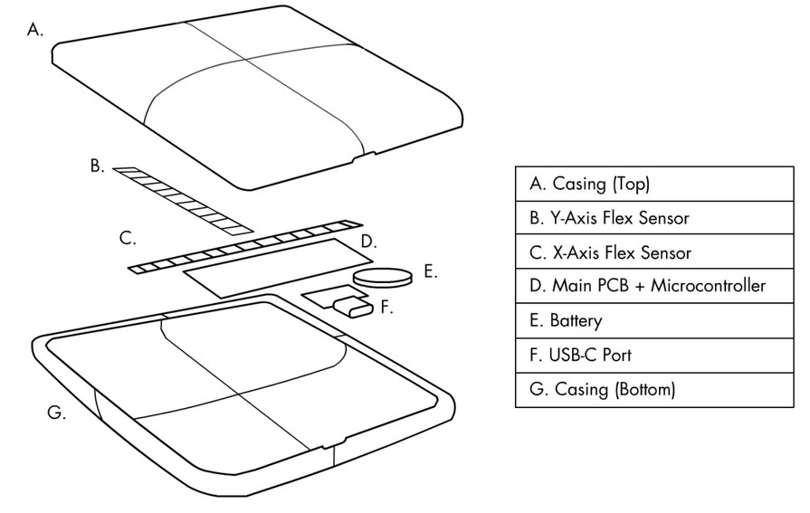
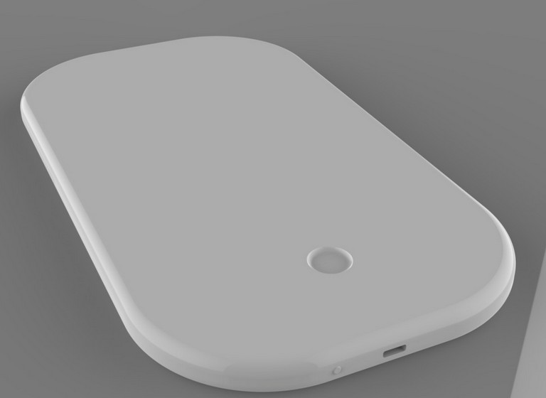
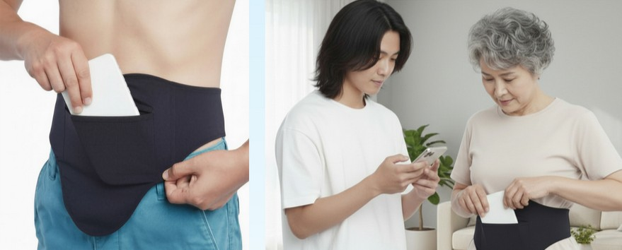

The problem
Roughly 1 in 500 U.S. adults live with an ostomy — a surgically created stoma that diverts waste into an external pouch. Because the stoma has no sensation, ostomates cannot tell when the pouch is filling. The result: constant manual checking, disrupted sleep, and severe anxiety about leakage.
Pouch overfilling is the leading cause of leakage, which causes skin damage, infection, and significant psychological distress. The average ostomate is 68.3 years old — a population with higher rates of dementia, making automated awareness even more critical.
"I wake up almost every single night. I've resorted to taking daily naps to combat my fatigue… I just risk it." — Anonymous ostomate interviewee
Research & process
I interviewed ostomates and disability advocates including Alannah-Jayne Simpson, an ostomy blogger from Scotland. The research confirmed three core insights: ostomates need awareness during sleep, they strongly value discretion, and elderly users face compounding challenges around dexterity and cognitive load.
My first ideation explored Hall Effect (magnetic) sensors — effective at detecting distance changes but dangerous for users with pacemakers. I pivoted to capacitive sensors, then landed on flex sensors, which detect changes in electrical resistance as they bend. Testing with a real ostomy pouch filled with rice and wet paper towels confirmed the pouch expands with a convex curve of 10–20° and extends roughly 42mm when full.


Ideation sketches and early cardboard mockups used to test expansion sensing concepts.
Design solution
Stoma-Cue is a thin, one-piece TPU device housing dual-axis flex sensors, a flexible PCB, microcontroller, lithium-ion battery, and USB-C charging port. It slides into a specialized zippered pocket built into an ostomy support belt — a product many ostomates already wear — placing it snug against the pouch to bend naturally as it fills.
When the fullness threshold is reached, the microcontroller sends a phone notification. Users receive a discreet alert — even during sleep — before leakage occurs.



Limitations & reflection
One known limitation is "pancaking" — when users sleep on their stomachs, waste can flatten inside the pouch, reducing the convex curve the device relies on. This may require users to adjust sleeping position, though future iterations could explore pressure-based sensing to complement the flex approach.
Stoma-Cue is the first industrial design approach to this problem. Existing biomedical proposals addressed detection in isolation but did not consider ergonomics, discretion, or the lived experience of ostomates across age groups. This project represents an opportunity to redefine how medical wearables support users in real-world environments.